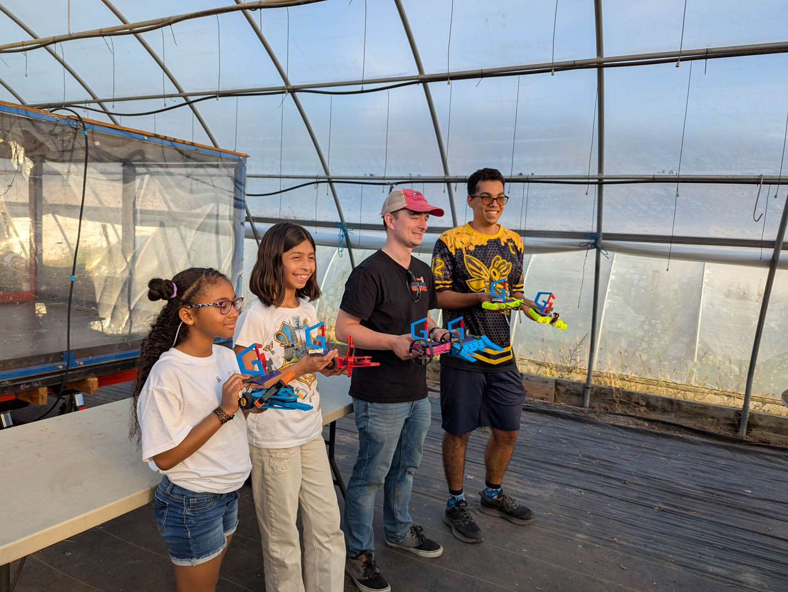
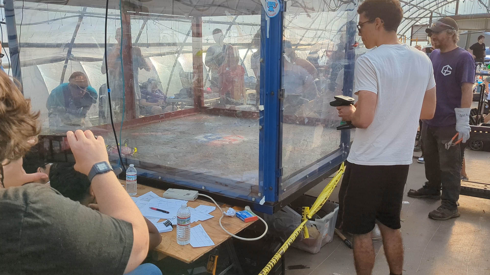

🤖
See it in action
Robotics, invention demonstrations, electric power racing, science experiments and hands-on exhibits make innovation feel real.
Imagine Middlesex County coming together to build, experiment, discover and connect. A hands-on celebration of creativity with the potential to spark learning, careers, businesses and collaborations long after the event.

 MEET K-9 ↗
MEET K-9 ↗Middlesex Maker Fest is a proposed celebration of STEAM—science, technology, engineering, arts and mathematics—designed to bring makers, students, educators, local businesses and curious families into the same creative space.
Explore belowRobotics, invention demonstrations, electric power racing, science experiments and hands-on exhibits make innovation feel real.
Workshops and challenges invite every visitor to move from watching to doing—and to discover a new interest or ability.
Schools, mentors, companies, clubs and community organizations meet people they might never have encountered otherwise.
Planning status: This is a stakeholder development proposal. Event date, venue, participating organizations and sponsorship commitments have not yet been finalized.
Middlesex County's public economic-development vision connects education, workforce, industry, arts and community life. A Maker Fest can turn these priorities into something residents can experience together.
Public indicators of community reach and workforce relevance — not attendance predictions or promised festival outcomes.
The County's Community, Innovation and Opportunity investment plan envisions the Middlesex College campus as a year-round destination for learning, innovation, culture and community. Maker Fest is a proposed opportunity to complement—and help bring visibility to—these wider goals.
Explore county vision ↗Data sources: U.S. Census Bureau QuickFacts and Middlesex County Economic Development; full links below.
These moments from earlier maker events show what a hands-on celebration can feel like: children making discoveries, families participating together, and new friendships forming around shared ideas.



Photography: past Sussex County Maker Fest activities; illustrative of the experience proposed for Middlesex County. Middlesex Maker Fest has not yet taken place.
The most important outcome is not just how many people attend. It's what people do after meeting an idea, a teacher, a tool or another maker.
Visitors encounter a new field or creative skill.
They experiment, build and develop confidence.
Clubs, mentors, schools and employers share next steps.
Classes, maker spaces, internships or projects create continuity.
New skills, collaborations and entrepreneurial ideas can emerge.
Student showcases, educator connections, accessible STEAM workshops, career discovery and interdisciplinary learning.
Early exposure to engineering, fabrication, coding, design, emerging tech and local industry roles.
Intergenerational exchange, volunteer leadership, creative confidence, belonging and access to shared resources.
Racing, robot combat, 4-H and student robotics offer an exciting glimpse of the kinds of experiences that inspire future makers.
These third-party videos are examples for inspiration and outreach, not confirmed Middlesex Maker Fest participants or scheduled activities.
Maker Quest is an early-stage interactive companion app already being developed for the proposed festival. It turns a passive event schedule into an active journey of discovery.
Exhibits and workshops
Digital badges and challenges
Bot combat and power-racing mini-games
Optional, privacy-conscious engagement insights
Potential future enhancements include partner-sponsored challenges, age-appropriate rewards, accessible participation paths and post-event learning links. These are ideas to develop, not guaranteed features.
Collect • Discover • Create
Not every meaningful partner writes a check. Contributions of expertise, space, equipment, volunteers and connections can be just as important as financial support.
Support hands-on learning, demonstrate technology, host a challenge and connect your brand to a community-driven initiative.
Showcase programs, engage student teams, provide workshops and create bridges to continuing education and career pathways.
Bring youth groups, libraries, clubs, makerspaces and families into a welcoming shared learning experience.
Explore space, logistics, accessibility, safety, outreach, volunteer coordination and connections to public goals.
Specific sponsor levels, pricing, naming rights and benefits should be confirmed against the final event budget, venue and expected attendance before publication.
A successful campaign gives people an identity to connect with, an invitation to contribute and a story worth sharing—without relying on exaggerated claims or manipulative tactics.
Feature local makers, students and real projects in short videos, educator spotlights and behind-the-scenes content.
Equip teachers, youth clubs, libraries and neighborhood organizations with adaptable share kits.
Invite people to try mini-challenges through Maker Quest and share completed builds or learning milestones.
Track opt-in interest, partner conversion, participation, learning feedback and post-event follow-through.
A sponsor should know what its investment enabled. These are proposed measures to collect, not results from an event that hasn't occurred.
Registrations, age-appropriate attendance bands, geographic reach and access support offered.
Completed workshops, demonstrations attended and optional Maker Quest activity.
Opt-in post-event surveys on interest in STEAM, confidence and intended next steps.
Follow-up club enrollment, educator requests, mentor introductions and future collaboration.
Measurement plan: obtain consent for data collection; minimize personal data, especially for minors; report aggregate results. No projected attendance or return on investment is presented as established fact.
Rather than announcing a date too early, we can build institutional commitment in stages and make each decision stronger than the last.
Confirm organizing team, host/venue feasibility, a shared mission and initial academic/community champions.
Develop budget, event footprint, safety/accessibility plan, exhibitor categories, sponsorship prospectus and measurable goals.
Open calls for makers and volunteers, launch the public campaign, pilot Maker Quest and evaluate outcomes.
Potential stakeholder conversations and exploratory outreach do not imply institutional endorsement, a signed partnership or confirmed participation.
We're looking for conversations with prospective venue hosts, educational institutions, corporate supporters, community groups, makers and volunteer leaders.
General inquiries link to FUBAR Labs' publicly listed email address. Confirm the dedicated event contact and approval before publishing broadly.
Produced by FUBAR Labs. Fair Use Building and Research (FUBAR) Labs is a volunteer-powered, nonprofit makerspace founded in New Brunswick in 2009 and now based in North Brunswick, New Jersey. It brings makers, hackers, artists, engineers and curious newcomers together to share tools, ideas, skills and the pleasure of making.
Its mission is to foster technical, scientific and artistic skills through hands-on projects, collaborative problem-solving, experimentation and education. From electronics, 3D printing and robotics to fabrication, power racing and workshops, FUBAR Labs makes exploration a shared experience. Read the official FUBAR Labs mission ↗
Rick is a FUBAR Labs co-founder, Rutgers University virtual-worlds innovator and longtime advocate for hands-on technology education. His work has connected students and communities to electronics, Arduino, programming, 3D printing and creative experimentation. A co-author of Pro Arduino, Rick has helped turn complex technologies into approachable opportunities to learn by making.
Designed and developed this website. Ariel is a Rutgers University multimedia designer, filmmaker and former advertising art director with more than two decades of creative production experience. His work connects storytelling, instructional media, visual communication and technology; he has also taught photography and filmmaking to students and young makers.
His passion for lifelong learning and teaching is personal. As a father, he wants his daughter—and every young person—to have opportunities to discover what excites them, meet generous mentors and feel empowered to create. That belief is at the heart of his work on Middlesex Maker Fest.
The proposed festival brings together a wider community of makers, educators, partners and volunteers. The individuals profiled here reflect the people and values behind this website and its vision; prospective event partnerships remain subject to confirmation.
This public-facing concept distinguishes confirmed background information from ambitions and proposals. County statistics are sourced and should be refreshed before a final release.
U.S. Census Bureau — QuickFactsMiddlesex County Economic DevelopmentCounty CIO Investment PlanNJMEP — 2026 Industry Report (2024 employment)NJ Labor — Industry sector focusFUBAR Labs — AboutFUBAR Labs — MissionRick Anderson — Rutgers profileSussex County Maker Faire — Event context